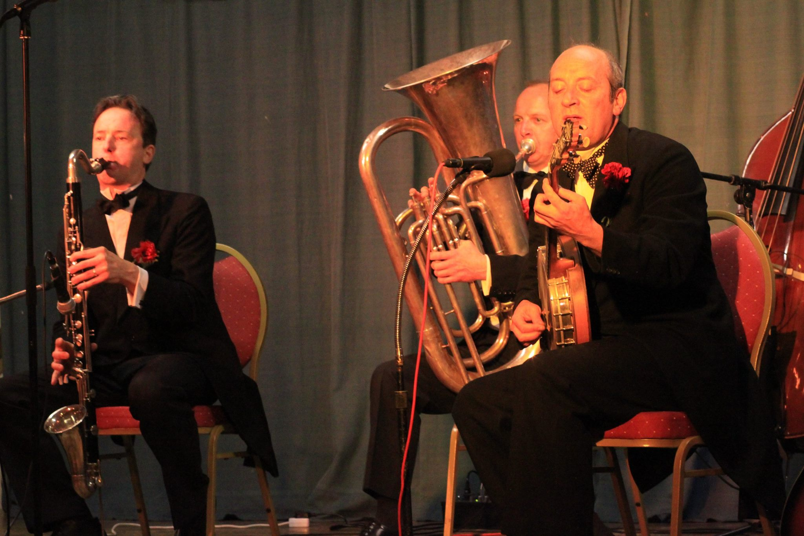

The latest album from Hot Fingers, led by the wizardly Spats Langham, presents 22 period pieces, not all by any means familiar, in ingenious arrangements made the more so through versatile instrumentation. For that Langham himself takes much credit, wielding the banjo, ukulele, and guitar, but it's Danny Blyth who wins the award for multi-instrumentalist par excellence in this set, given that he varies things through the use of guitar, mandolin, clarinet, bass clarinet, and harmonica. Malcolm Sked is his usual tower of strength and the singer is Emily Campbell not, as one might have supposed, Debbie Arthurs, who often sings with this groups and others like it. The spirit of the peppy 20s is immediately summoned up and reprised throughout. Nothing - or few things - could be as evocative of time and place as Vo Do Do De O Blues. Unlike his confrere Martin Wheatley, Spats Langham is partial to Django Reinhardt and Oscar Alemain as he shows in a slow and respectful version of Chaplin's Smile. Even more of this can be savoured in the Gypsy-Jazz La Gitane. Indeed this is not a stylistically hermetic group, and likes to chance its arm once in a while, as it does when mining the Leadbelly Songbook in In The Pines, complete with harmonica and Country Blues ethos. Emily Campbell may well have been listening to Beryl Davis when singing Undecided as there's a genial, girlish lilt to the thing, even with Campbell's vestigial classically-trained vibrato.
How interesting to hear the Kinks' Ray Davies jazzed-up in Mr Pleasant though Spats soon dons his Bing-meets-Al chops for the immortal Brother, Can You Spare A Dime? The instrumental I enjoyed most was the splendid version of Shanghai Shuffle in which the group sounds much bigger - the biggest little band in the land - through its cultivation of rich ensemble and instrumental plenitude. Spats loves his Ukelele Ike and is a purveyor of period double-entendre ('filth' to the righteous), as he shows in If You Can't Land Her On The Old Verandah. Well, indeed.
It's reflective of a wide-ranging disc, not just one trading on novelty and 20s gestures. The envoi is a finger-snapping On The Sunny Side Of The Street which summons up Fats in his genial pomp and bids adieu in a delightfully glass half-full spirit. Kudos too to the warm recording engineered via Paul Adams's ribbon microphones.
Jonathan Woolf
Years ago I used to pop to my local pub (anyone remember those?) and be 'entertained' by artists the calibre of Bill Posters Will Be Band and Bob Kerr's Whoopee Band. Well, they're becoming a rare breed these days so it's refreshing to find a CD from those nice folks at Lake Records (more commonly known to you and me as Paul Adams at Fellside Records) with a group of artists capturing that lazy Sunday afternoon feeling. A real 'Festival' pleaser, you can prime yourselves with a glass of Pimms, put on your straw hat and sun-glasses as you bask in the fruity tones of Hot Fingers.
Led by the effervescent Spats Langham on Banjo, Guitar, Ukulele and Vocals, Malcolm Sked (Double Bass/Tuba), Emily Campbell (Vocals/Triangle) and multi-instrumentalist Danny Blythe on Guitar, Mandolin, Clarinet, Bass Clarinet and Harmonica this quartet certainly know how to cook. They even dress for the occasion with their sartorially snappy suits and cocktail dress looking every inch the 'dandies' they more than likely are. I must admit to not knowing a majority of their repertoire with the exception of “Can't Help Lovin' That Man Of Mine” Albert Ketelbey's “In A Persian Market” and a couple of others but who cares when you've got 23 bright and breezy tracks to choose from? If you long for the days of Acker Bilk and Kenny Ball check this CD out...you won't be disappointed.
I often jokingly tell Red Lick customers that I listen to a lot of awful music so they don't have to! There is sadly some truth in this as, far too often, eager anticipation of a potential new-found gem of a CD soon gives way boredom and annoyance. However, when little gems do turn up, it all seems to be worthwhile, and here I now am, the proverbial kitten that has found some cream.
This 23 track CD is a corker, incorporating vintage American acoustic string music such as hot jazz, 1930s swing, gypsy jazz, early blues, American songbook crooning and so much more, all thrown together in just about the most playing-est amalgam possible, always respectful but not overly reverential.
The core trio is led by multi-instrumentalist Spats Langham, ably supported by Malcolm Sked and Danny Blyth. Veterans of the UK jazz scene, between them they play everything from guitar, banjo, mandolin, harmonica, clarinet, tuba, even triangle and energetically apply it across a bewildering canvas of musical styles - from the lively gypsy jazz opener of “Swing Gitane,” through classic period songs of Kern and Hammerstein, George and Ira Gershwin and Irving Berlin, taking in Greig's “Norwegian Dance” (Op35 No 2), even ending the set with a sprightly version of Louis Prima's “Oh, Marie.” This is clearly music made and played to be enjoyed.
The sheer diversity of the album works in its favour and I love it all, but special mention must go to the laugh-out loud versions of songs such as “South American Joe,” “Hard Hearted Hannah” and, especially, “Skirts.”
If you liked the recent Ken & Bob CD on Grass Skirt and have enjoyed the likes of CW Stoneking and Pokey LaFarge over recent years, turn your ear to this!
Thomas “Spats” Langham is no stranger to Jazz Clubs in the North West, or indeed to any club or festival in the land, having been a professional musician for more than twenty years. From the early days as the banjo and guitar player in the rhythm section of many an ensemble, he has an unquestionable devotion to the musical fashions (and attire!) of the 1920's and 1930's, with all the knowledge about the highs and lows of performers and song-writers on both sides of the Atlantic! His verbal introduction to the “next” song draws you into that era of entertainment, from the night-clubs and theatres into the world of recorded sound and the wireless, scenes of the “talkies”, and even the glamour of “Astaire & Rogers” musicals.
The “Hot Fingers” ensemble with Danny Blyth and Malcolm Sked is not so well known due to Spats' continuing and deserved popularity with other musicians and promoters both here and abroad, but since these three live within just a few miles of each other (“near enough to hear the banjo,” jokes Danny), with a regular gig at the Crown & Trumpet at Broadway in the Cotswolds (if you should go there be sure to book in advance!), and additionally very sought-after on their “home patch,” one realises how, in just a few years, they have perfected their style and an enormous repertoire. The first half opened with “Shanghai Shuffle”, with Danny playing Clarinet. “The Old Man of the Mountains” followed, with Spats doing the Al Bowlly vocal. With Danny on bass clarinet, and Malcolm on tuba, it almost defined the Roy Fox recording from 1931! An instrumental tribute to Django next with “Douce ambience” and “Norwegian Dance” (yes,the one by Grieg!) with Spats leading on guitar, Danny on rhythm guitar, Malcolm on double bass.
Then more from the British Dance Band days—firstly “South American Joe”—the “Ambrose” sound replicated by Spats on ukulele and vocal, Danny on mandolin, and Malcolm on tuba. Secondly, from the Savoy Orpheans, a song that captured the “sexuality” of the '30's— “ Masculine women, feminine men, which is the rooster, which is the hen?” with Spats on banjo and vocal after Danny's clarinet, followed by an excellent “solo chorus” on bass clarinet from Danny.
A tribute to Fred Astaire followed, with Spats' account of the movie story-line that preceded the song, leading to a super vocal rendition of “Change Partners”, with guitars and double bass.
“Tico Tico” was the next instrumental—a tribute to Argentinian guitarist Oscar Aleman, who worked with Josephine Baker in Paris until returning to Buenos Aires in 1941. Spats explained how Oscar and Django were booked to make a recording together, but Django (who was apparently in awe of Oscar's playing) failed to show up! The French connection was then extended by a delightful Parisian waltz from the 30's, titled “Misteriose” (I hope that's the correct spelling). Next another vocal from Spats—“Good little bad little you”— (with ukulele, guitar, and double bass) after Spats' account of the ups and downs of the career of “Ukelele Ike”!
The first half closed with a blistering up-tempo version of “Nagasaki,” Spats on vocal, and banjo solo, Danny on clarinet.
The trio opened the second half with some more “Hot Club”-style favourites with the two guitars and double bass. “Russian Lullaby” and “Besame Mucho” both had Spats on vocals. After recounting his experience at aSamois sur Seine “Django” festival (when Spats suggested Eddie Lang was the better guitarist!) a stunning instrumental version of “Swing Gitane” followed!
More from the “Ukelele Ike” song-book—“Night Owl” (also the title of their recent CD)—an interesting “major to minor” sequence— with a guitar solo from Danny that showed his mastery of “harmonics” on the guitar strings! Then a vocal number called “Walking Stick” (Irving Berlin) with the novelty of Danny playing castanets before another delightful clarinet chorus.
Back to the Dance Band Days with Billy Cotton's “Skirts”, more banjo and clarinet, and a fine display of “slap” bass playing from Malcolm. “On my Persian Rug” demonstrated a 30's fascination with the rhythms of the “mystical East” (eg, diddy-bomp,diddy-bomp!) well suited to the instrumentation of mandolin, banjo and double bass!
Then in complete contrast, a stunning version of Sonny Terry and Brownie McGhee's “Country Blues” with not only remarkably similar guitar picking from Spats but also 'blues' Harmonica from Danny!
Could there be possibly be any other “evocative” material left in the repertoire? Oh yes there was! “The Harry Lime” theme (with 'cuckoo' echo!). Spats and Danny then recreated two tunes recorded by guitarists Lonnie Johnson and Eddie Lang (the latter disguised on the record label by a pseudonym due to racial intolerance)—“Jet Black blues” and “Hot Fingers” (so that's where the name came from!) Dance band days again with “Lena from Palestina” and a tuneful tuba solo! “By a Waterfall” called for some (willing) audience participation along with some great 'fours' (i.e. alternating solos each of four bar duration) between the ukulele and tuba.
The final number was “Buena Sera” (in true Louis Prima style). But, even after a performance of more than double the number of tunes usually played at the Club, the audience called for more! So it was...“Goodnight Sweetheart.” Nothing else could have been more appropriate.
Presentation, musicianship,entertainment, and rapport with an audience, often outweigh considerations about personal preferences in Jazz music. Hot Fingers have mastered those skills, and the audience went home feeling very happy. There's nothing else left to say!
Spats made a welcome return to Pershore, this time with his Hot Combination and some complimentary words for our 'new' venue (we were in Number 8 when he was last here). And what a combination it was, every permutation of the instruments on hand blending into the band's unique acoustic sound of the 1920s complete with Spats's 78rpm vocals.
The evening was filled with a range of numbers played with passion and conviction from that period of jazz so dear to the hearts of the band. Admiration for Cliff Edwards aka 'Ukulele Ike' was apparent with Spats' ukulele and high pitched scat singing on 'He's the Hottest Man in Town' and more ukulele gymnastics on 'Good Little Bad Little You'. More names appeared like a roll call from the 'golden age' — 'Got a Date with an Angel' made famous by Al Bowlly, nice bass and sax from Malcolm and Norman. 'Melancholia' and the very South American 'Bessame Mucho' from the Oscar Aleman repertoire. Jack Hylton's 'Shepherd of the Hills' featured a tuba solo from Malcolm and Norman's C-melody sax. Spats and Danny on guitars delighted us with 'Guitar Blues' and 'Jet Black Blues' from the days of the Lonnie Johnson-Eddie Lang band and reproduced a realistic zither sound for the 'Harry Lime Theme' from The Third Man. Norman's clarinet and C-melody sax brought the dancers out with 'Take Me to the Land of Jazz' and then Danny took to mandolin for 'Sing Song Girl'. 'The Ghost of St Louis Blues' featured a creepy horror introduction and before 'My Sweet Virginia', Spats related another horror story involving Tommy Burton's beer and Nat Gonella's false teeth! There was such lot of the evening to remember with numbers like 'Singin' in the Bathtub' with Norman on bass clarinet, the eastern style banjo and clarinet on 'Leena from Palestina', and the gentle 'Just Like a Melody from out of the Sky'.
So many tunes, so much history. No wonder Humphrey Lyttleton called them 'jazz archaeologists'. Thanks to the Hot Combination for a wonderful evening of nostalgia from the more relaxed, vintage years of jazz.
Dressed like Bogie but sounding like an Edward Hopper. The Bogart aspirant is Spats Langham and the title of his new album has that Hopper ring. It's not how I think of Tom Langham, that pre-War recidivist, whom I imagine driving an open-topped British Racing Green tourer to Shuttleworth, a picnic basket clinging precariously to a boot full of champagne, and a Flapper giggling in the passenger seat. Maybe a portable HMV gramophone somewhere about the place as well, with some Eddie Lang and Lew Stone ready to receive the thorn needle.
Actually it turns out that Langham drives a 1931 Austin Seven and wears Harris Tweed. The man is an incorrigible throwback. He and his Hot Combination, with some guest stars, have carved out just shy of an hour's worth of good honest pleasure in this Hopperesquely titled disc. The song selection satellites around things by Ukelele Ike, a special favourite of Langham, Emmett Miller and a number of tunes that won't be over-familiar to listeners. Astute song selection ensures interest is maintained and choice arrangements similarly ensure that aural fatigue is kept splendidly at bay.
Kudos to Malcolm Sked, who pumps away so splendidly throughout, not least in the opener where Danny Blyth's rhythm guitar keeps things springy and swingy. Norman Field multi-tasks on clarinet and saxophone and Spats takes the vocal and a solo strong on vitality.
Keith Nichols, piano meister, guests on trombone on Got A Date With An Angel and elsewhere. Another guest, Langham's guitar confrere Martin Wheatley, lays out some Hawaiian guitar wares on Gotta Getta Girl. Chinoiserie vogue haunts Sing Song Girl whilst Bonzo's Tango is a Langham composition, a sinewy affair, full of shining teeth and hips. I reckon Maurice Elwin and the Rhythmic Eight are the inspiration for this version of Mysterious Mose - a good tune that should be heard more often despite the period vocal. Most certainly though Al Bowlly and Roy Fox resonate behind My Sweet Virginia though it's just possible that an archivist extraordinaire such as Langham has had access to Bowlly's rare recording of the song with Arthur Lally on Durium; the result in any case is exciting and highly effective.
Talking of which the rhythmic brio and panache that launches It All Belongs To Me is searing; what a punch is packed by the chaps, not least by Wheatley sitting in again, and by Spats's excited vocals. Debbie Arthurs lends her vocals to Moanin' Low and her pure Annette Hanshaw voice is, as ever, a splendid asset, and so too her skill behind the drum kit, as she displays throughout. Good on the band for revivifying the Halfway House's 1925 New Orleans Shuffle. (If they came to the song by another route, good on them anyway.) Langham admits that the song long associated with Argentinean jazz guitarist Oscar Aleman, Melancolia, is 'dangerously modern' for the early 1940s but it's good he has graciously crept over the boundary rope separating darkness from light to revive it. Langham and Wheatley both share admiration for Aleman but neither, I suspect, much goes for Django. Chaps, for shame!
The hot quintet of like minded confreres — Langham, Blyth, Field, Sked and Arthurs — produces a splendidly authentic ensemble sound. The music is vibrant, swinging, and investigates reportorial byways well worth exploring. Nighthawk or not Langham proves a fearless and finger-sure revivifier of true accomplishment.
— Jonathan Woolf, The Northern Echo - August 13, 2009